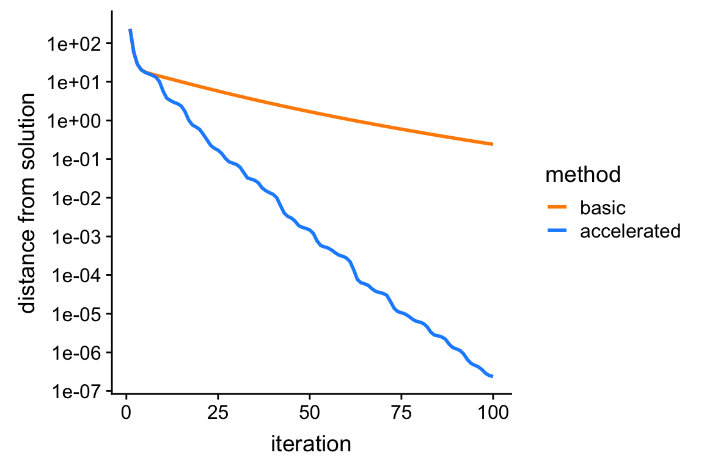

Last updated: 2019-06-09
Checks: 7 0
Knit directory: daarem/analysis/
This reproducible R Markdown analysis was created with workflowr (version 1.4.0). The Checks tab describes the reproducibility checks that were applied when the results were created. The Past versions tab lists the development history.
Great! Since the R Markdown file has been committed to the Git repository, you know the exact version of the code that produced these results.
Great job! The global environment was empty. Objects defined in the global environment can affect the analysis in your R Markdown file in unknown ways. For reproduciblity it’s best to always run the code in an empty environment.
The command set.seed(1) was run prior to running the code in the R Markdown file. Setting a seed ensures that any results that rely on randomness, e.g. subsampling or permutations, are reproducible.
Great job! Recording the operating system, R version, and package versions is critical for reproducibility.
Nice! There were no cached chunks for this analysis, so you can be confident that you successfully produced the results during this run.
Great job! Using relative paths to the files within your workflowr project makes it easier to run your code on other machines.
Great! You are using Git for version control. Tracking code development and connecting the code version to the results is critical for reproducibility. The version displayed above was the version of the Git repository at the time these results were generated.
Note that you need to be careful to ensure that all relevant files for the analysis have been committed to Git prior to generating the results (you can use wflow_publish or wflow_git_commit). workflowr only checks the R Markdown file, but you know if there are other scripts or data files that it depends on. Below is the status of the Git repository when the results were generated:
Unstaged changes:
Modified: code/misc.R
Modified: code/mr_ash.R
Modified: code/mr_ash_demo.R
Modified: code/ridge.R
Note that any generated files, e.g. HTML, png, CSS, etc., are not included in this status report because it is ok for generated content to have uncommitted changes.
These are the previous versions of the R Markdown and HTML files. If you’ve configured a remote Git repository (see ?wflow_git_remote), click on the hyperlinks in the table below to view them.
| File | Version | Author | Date | Message |
|---|---|---|---|---|
| Rmd | fe3a5ee | Peter Carbonetto | 2019-06-09 | wflow_publish(“ridge.Rmd”) |
| html | 6b9cb1d | Peter Carbonetto | 2019-06-09 | Reworked the ridge co-ordinate ascent updates so that they look more |
| Rmd | d703a6b | Peter Carbonetto | 2019-06-09 | wflow_publish(“ridge.Rmd”) |
| Rmd | fa7f6f2 | Peter Carbonetto | 2019-06-09 | wflow_publish(“ridge.Rmd”) |
| html | a087316 | Peter Carbonetto | 2019-06-09 | Added equation for co-ordinate ascent update to “ridge” analysis. |
| Rmd | 51a653a | Peter Carbonetto | 2019-06-09 | wflow_publish(“ridge.Rmd”) |
| Rmd | 3156372 | Peter Carbonetto | 2019-06-04 | wflow_publish(“ridge.Rmd”) |
| html | 08c5b18 | Peter Carbonetto | 2019-06-04 | Completed “ridge” analysis. |
| Rmd | 6b60d90 | Peter Carbonetto | 2019-06-04 | wflow_publish(“ridge.Rmd”, verbose = TRUE) |
| Rmd | 823c34f | Peter Carbonetto | 2019-06-04 | Fixed up the ridge regression code a bit. |
| html | 823c34f | Peter Carbonetto | 2019-06-04 | Fixed up the ridge regression code a bit. |
| Rmd | a1e8367 | Peter Carbonetto | 2019-06-04 | ridge workflowr analysis builds successfully. |
| Rmd | 844461a | Peter Carbonetto | 2019-06-04 | s0 is now the prior s.d. rather than the prior variance. |
In this small demonstration, we show how the DAAREM method can be used to accelerate a very simple co-ordinate ascent algorithm for computing the maximum a posteriori estimate of the coefficients in a linear regression with a simple normal prior on the coefficients (i.e., ridge regression). The co-ordinate ascent update for \(\hat{\beta}_i\), the estimate of the regression coefficient for variable \(i\), is \[\hat{\beta}_i = \frac{(X^Ty)_i - \sum_{j\,\neq\,i} (X^T\!X)_{ij} \hat{\beta}_j} {(X^T\!X)_{ii} + 1/\sigma_0^2},\] where \(X\) is the \(n \times p\) matrix storing the \(n\) observations of \(p\) variables, \(y\) is the \(n\)-vector of regression outcomes, and the prior on the coefficients is assumed to be i.i.d normal with mean zero and variance \(\sigma^2 \sigma_0^2\), where \(\sigma^2\) is the variance of the residual.
These variables specify how the data are generated: n is the number of simulated samples, p is the number of simulated predictors, na is the number of simulated predictors that have a nonzero effect, se is the variance of the residual.
n <- 200
p <- 500
na <- 10
se <- 4This specifies the prior on the regression coefficients: it is normal with zero mean and variable s0.
s0 <- 1/seLoad some packages and function definitions used in the example below.
library(MASS)
library(daarem)
library(ggplot2)
library(cowplot)
source("../code/misc.R")
source("../code/datasim.R")
source("../code/ridge.R")Initialize the sequence of pseudorandom numbers.
set.seed(1)Simulate predictors with “decaying” correlations.
X <- simulate_predictors_decaying_corr(n,p,s = 0.5)
X <- scale(X,center = TRUE,scale = FALSE)Generate additive effects for the markers so that exactly na of them have a nonzero effect on the trait.
i <- sample(p,na)
b <- rep(0,p)
b[i] <- rnorm(na)Simulate the continuous outcomes, and center them.
y <- drop(X %*% b + sqrt(se)*rnorm(n))
y <- y - mean(y)Set the initial estimate of the coefficients.
b0 <- rep(0,p)Fit the ridge regression model by running 100 iterations of the basic co-ordinate ascent updates. Note that the co-ordinate ascent updates are very simple, and are easily implemented in a single line of R code; see the code for the ridge.update function.
out <- system.time(fit1 <- ridge(X,y,b0,s0,numiter = 100))
f1 <- ridge.objective(X,y,fit1$b,s0)
cat(sprintf("Computation took %0.2f seconds.\n",out["elapsed"]))
cat(sprintf("Objective value at solution is %0.12f.\n",f1))
# Computation took 0.47 seconds.
# Objective value at solution is -20.573760535831.Fit the ridge regression model again, this time using DAAREM to speed up the co-ordinate ascent algorithm.
out <- system.time(fit2 <- daarridge(X,y,b0,s0,numiter = 100))
f2 <- ridge.objective(X,y,fit2$b,s0)
cat(sprintf("Computation took %0.2f seconds.\n",out["elapsed"]))
cat(sprintf("Objective value at solution is %0.12f.\n",f2))
# Computation took 0.49 seconds.
# Objective value at solution is -20.332771749786.We see that the DAAREM solution is better (it has a higher posterior value).
Since the ridge estimate as a closed-form solution, we can easily compare the above estimates obtained via co-ordinate ascent against the actual solution.
bhat <- drop(solve(t(X) %*% X + diag(rep(1/s0,p)),t(X) %*% y))
f <- ridge.objective(X,y,bhat,s0)This plot shows the improvement in the solution over time for the two co-ordinate ascent algorithms: the vertical axis (“distance to best solution”) shows the difference between the largest log-posterior obtained, and the log-posterior at the actual ridge solution (bhat).
pdat <-
rbind(data.frame(iter = 1:100,dist = f - fit1$value,method = "basic"),
data.frame(iter = 1:100,dist = f - fit2$value,method = "accelerated"))
p <- ggplot(pdat,aes(x = iter,y = dist,col = method)) +
geom_line(size = 1) +
scale_y_continuous(trans = "log10",breaks = 10^seq(-8,4)) +
scale_color_manual(values = c("darkorange","dodgerblue")) +
labs(x = "iteration",y = "distance from solution")
print(p)
| Version | Author | Date |
|---|---|---|
| 08c5b18 | Peter Carbonetto | 2019-06-04 |
From this plot, we see that the accelerated algorithm progresses much more rapidly toward the solution; after 100 iterations, it nearly recovers the actual ridge estimates, whereas the unaccelerated version is still very far away.
sessionInfo()
# R version 3.4.3 (2017-11-30)
# Platform: x86_64-apple-darwin15.6.0 (64-bit)
# Running under: macOS High Sierra 10.13.6
#
# Matrix products: default
# BLAS: /Library/Frameworks/R.framework/Versions/3.4/Resources/lib/libRblas.0.dylib
# LAPACK: /Library/Frameworks/R.framework/Versions/3.4/Resources/lib/libRlapack.dylib
#
# locale:
# [1] en_US.UTF-8/en_US.UTF-8/en_US.UTF-8/C/en_US.UTF-8/en_US.UTF-8
#
# attached base packages:
# [1] stats graphics grDevices utils datasets methods base
#
# other attached packages:
# [1] cowplot_0.9.4 ggplot2_3.1.0 daarem_0.3 MASS_7.3-48
#
# loaded via a namespace (and not attached):
# [1] Rcpp_1.0.1 compiler_3.4.3 pillar_1.3.1
# [4] git2r_0.25.2.9008 plyr_1.8.4 workflowr_1.4.0
# [7] tools_3.4.3 digest_0.6.18 evaluate_0.13
# [10] tibble_2.1.1 gtable_0.2.0 pkgconfig_2.0.2
# [13] rlang_0.3.1 yaml_2.2.0 xfun_0.7
# [16] withr_2.1.2.9000 stringr_1.4.0 dplyr_0.8.0.1
# [19] knitr_1.23 fs_1.2.7 rprojroot_1.3-2
# [22] grid_3.4.3 tidyselect_0.2.5 glue_1.3.1
# [25] R6_2.4.0 rmarkdown_1.13 purrr_0.2.5
# [28] magrittr_1.5 whisker_0.3-2 backports_1.1.2
# [31] scales_0.5.0 htmltools_0.3.6 assertthat_0.2.0
# [34] colorspace_1.4-0 labeling_0.3 stringi_1.4.3
# [37] lazyeval_0.2.1 munsell_0.4.3 crayon_1.3.4